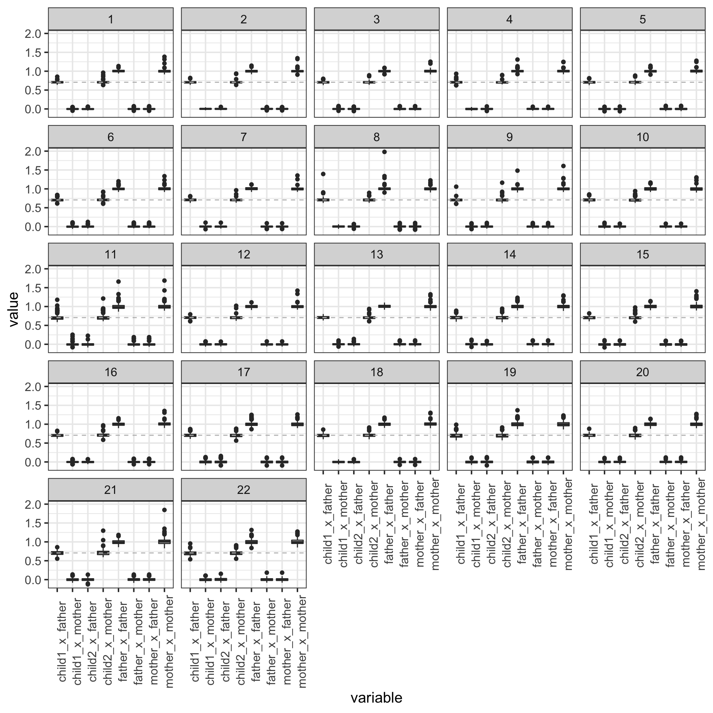
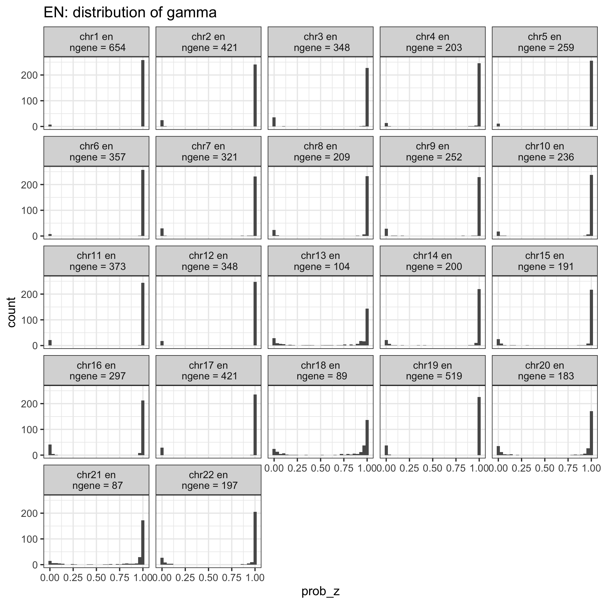
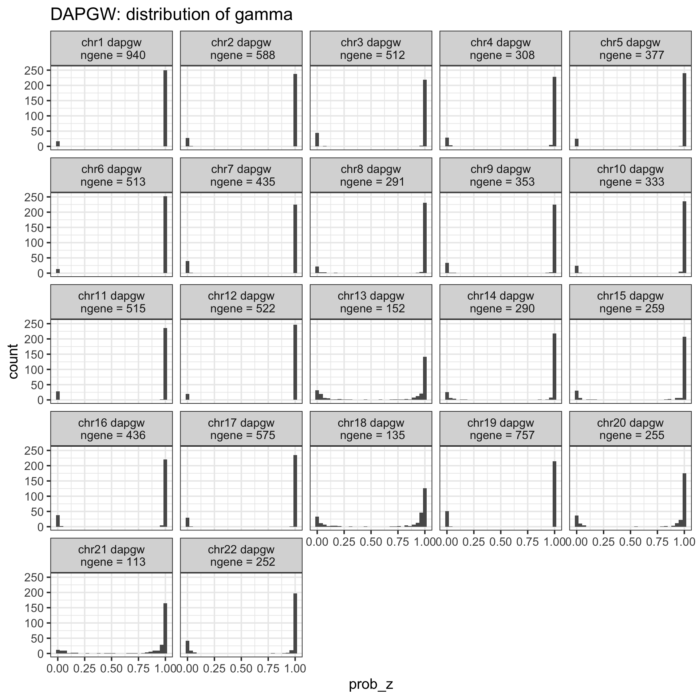
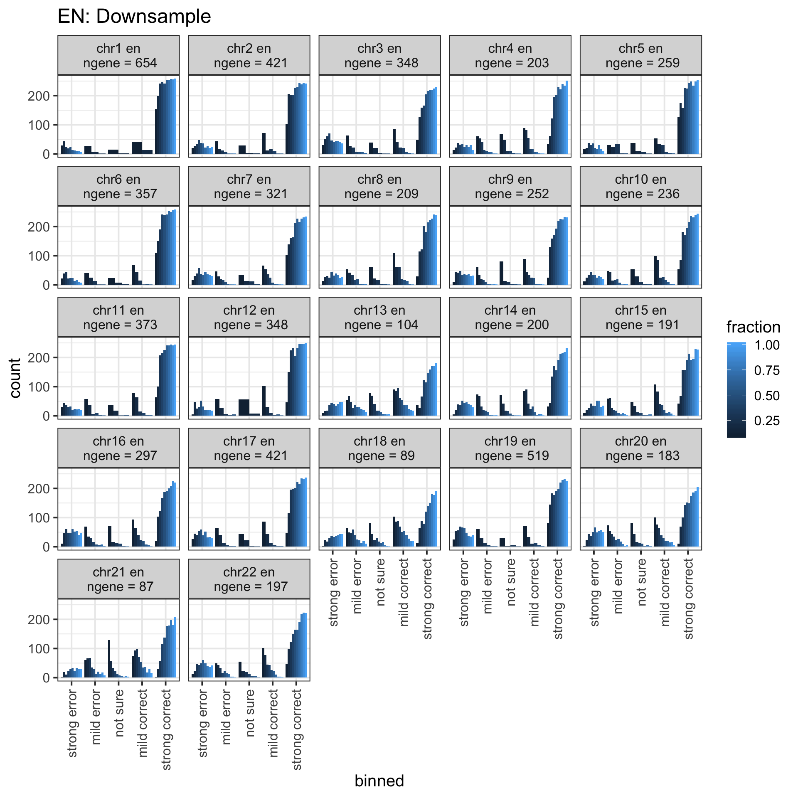
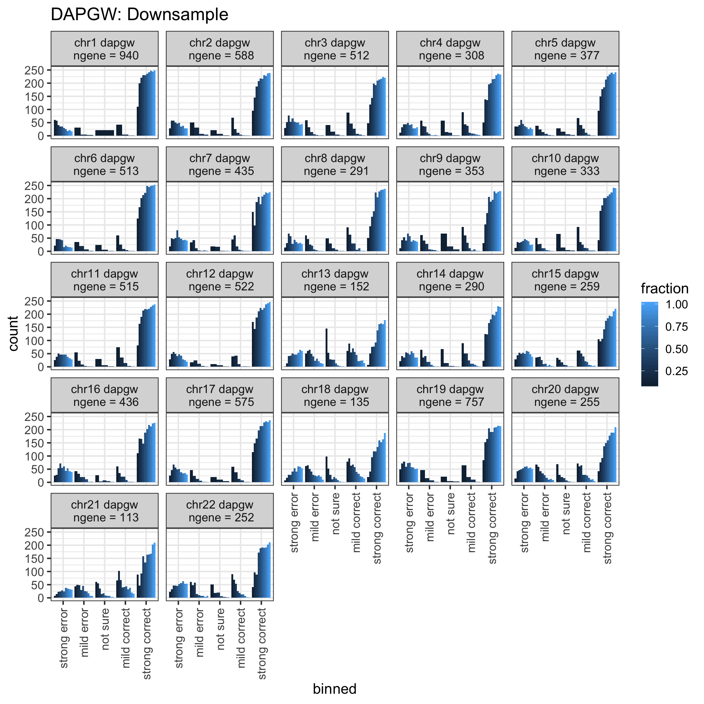
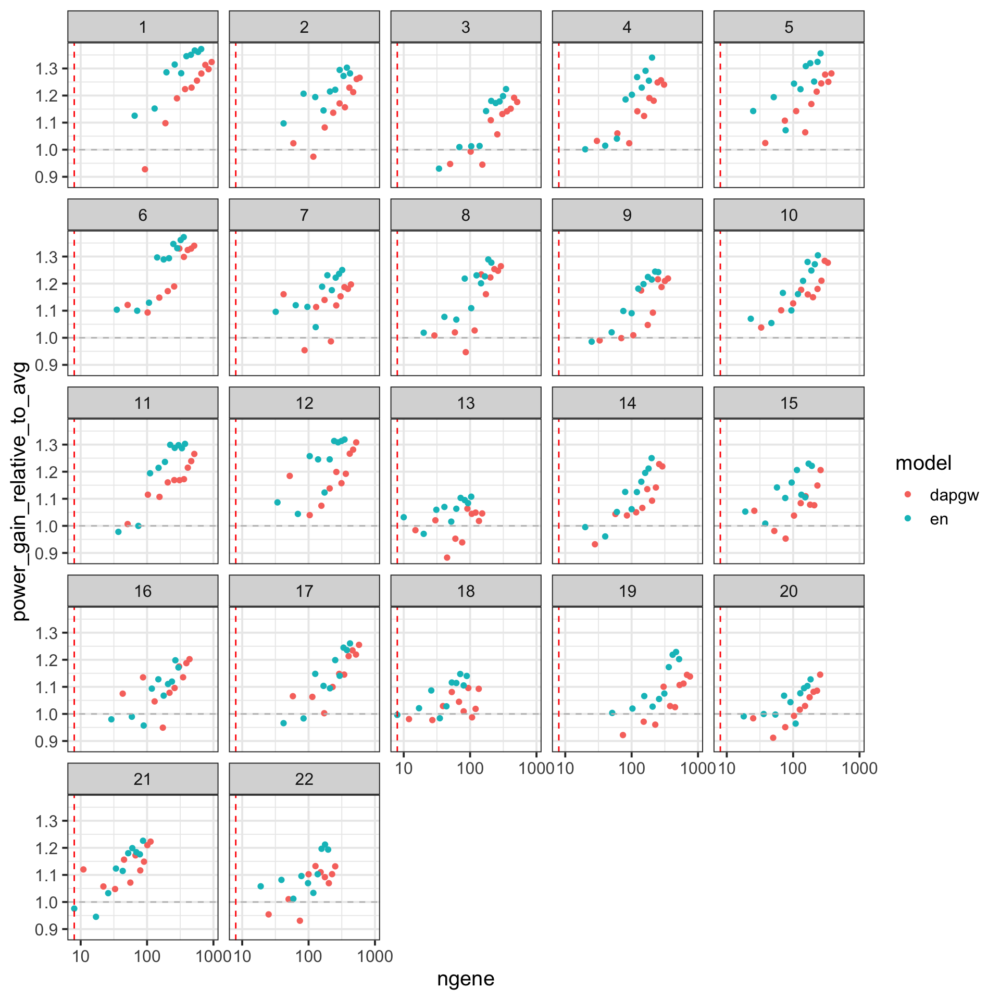

\[ \newcommand{\E}{\text{E}} \newcommand{\diag}{\text{diag}} \]
rm(list = ls())
library(dplyr)
library(ggplot2)
library(data.table)
theme_set(theme_bw(base_size=15))
bin_prob_z = function(x, cuts = c(0.1, 0.4, 0.6, 0.9)) {
left_most = cuts[1]
left_mid = cuts[2]
right_mid = cuts[3]
right_most = cuts[4]
o = rep('', length(x))
o[x < left_most] = 'strong error'
o[x >= left_most & x < left_mid] = 'mild error'
o[x >= left_mid & x <= right_mid] = 'not sure'
o[x > right_mid & x <= right_most] = 'mild correct'
o[x > right_most] = 'strong correct'
o = factor(o, levels = c('strong error', 'mild error', 'not sure', 'mild correct', 'strong correct'))
o
}
get_ngene = function(logfile) {
e = fread(cmd = paste0('cat ', logfile, ' | grep SUMMARY'), sep = ' ', data.table = FALSE)
e = e[length(e) - 3]
as.numeric(e)
}
power_calc = function(gamma) {
mean_z = mean(gamma)
mean_s = mean( gamma ^ 2 + (1 - gamma) ^ 2)
mean_z / sqrt(mean_s)
}The effort to analyze Framingham data is motivated by the failure on UK Biobank data where we have a tiny set of parental phenotypes to start with. Also, simulation results indicate that the more parental phenotypes the greater imputation power would be. So, we decided to dig into Framingham data where we have some child/father/mother tuple with both transcriptome and genotype available.
The code for this task is at scripts/framingham_detour/.
chroms = 1 : 22
df_from_geno = list()
for(chrom in chroms) {
df = fread(cmd = paste0('zcat < ~/Desktop/tmp/haplotype-po/framingham/infer_ho_from_genotype/from_extracted_pedigree.subset.chr', chrom, '.ho_from_genotype.tsv.gz'), header = TRUE, sep = '\t', data.table = FALSE)
df_from_geno[[length(df_from_geno) + 1]] = df %>% mutate(chr = chrom)
}
df_from_geno = do.call(rbind, df_from_geno)df_from_geno %>% summarize(mean(prob_z))## mean(prob_z)
## 1 1So, the crude approach of assigning haplotype origin indicates that haplotype 1 of child is from father for all pedigrees.
To further verify the result, we look at the observed kinship. The observed kinship between child’s haplotype and parents’ genotypes, which is defined as follow with standardized haplotype.
\[\begin{aligned} \E(K_{1, p}) &= \frac{1}{K} \sum_k \frac{1}{\sqrt{2}}[~ \E(H_k^1 H_k^{p,1}) + \E(H_k^1 H_k^{p,2}) ~] \\ &= \frac{1}{\sqrt{2}} \\ \E(K_{p, q}) &= \begin{cases} \frac{1}{K} \sum_k \frac{1}{2} [~ \E((H_k^{p, 1})^2) + \E((H_k^2{p, 1})^2) ~] = 1 & \text{, if $p = q$} \\ 0 & \text{, otherwise} \end{cases} \end{aligned}\]
df_geno_cor = list()
for(chrom in chroms) {
df = fread(cmd = paste0('zcat < ~/Desktop/tmp/haplotype-po/framingham/infer_ho_from_genotype/from_extracted_pedigree.subset.chr', chrom, '.child_parents_cor.tsv.gz'), header = TRUE, sep = '\t', data.table = FALSE)
df_geno_cor[[length(df_geno_cor) + 1]] = df %>% mutate(chr = chrom)
}
df_geno_cor = do.call(rbind, df_geno_cor)df_geno_cor %>% reshape2::melt(id.vars = c('individual_id', 'chr')) %>% ggplot() + geom_boxplot(aes(x = variable, y = value)) + facet_wrap(~chr) + theme(axis.text.x = element_text(angle = 90)) + geom_hline(yintercept = 1 / sqrt(2), linetype = 2, color = 'gray')
# ggsave('~/Desktop/temp.png', p, width = 10, height = 10)So, we have high confidence to say that “haplotype 1 of child comes from father for all families”.
Imputation on full data.
models = c('en', 'dapgw')
df_impute = list()
df_ngene = list()
for(chrom in chroms) {
for(mod in models) {
df = fread(cmd = paste0('zcat < ~/Desktop/tmp/haplotype-po/framingham/imputation/haplo_impute.', mod, '.chr', chrom, '.tsv.gz'), header = TRUE, sep = '\t', data.table = FALSE)
logfile = paste0('~/Desktop/tmp/haplotype-po/framingham/imputation/haplo_impute.', mod, '.chr', chrom, '.log')
df_impute[[length(df_impute) + 1]] = df %>% mutate(chr = chrom, model = mod, fraction = 1)
df_ngene[[length(df_ngene) + 1]] = data.frame(chr = chrom, model = mod, fraction = 1, ngene = get_ngene(logfile))
}
}
# df_impute = do.call(rbind, df_impute)Imputation on downsampled data.
fractions = 1 : 9 / 10
# df_impute = list()
for(chrom in chroms) {
for(mod in models) {
for(frac in fractions) {
df = fread(cmd = paste0('zcat < ~/Desktop/tmp/haplotype-po/framingham/imputation/haplo_impute.downsample_', frac, '.', mod, '.chr', chrom, '.tsv.gz'), header = TRUE, sep = '\t', data.table = FALSE)
logfile = paste0('~/Desktop/tmp/haplotype-po/framingham/imputation/haplo_impute.downsample_', frac, '.', mod, '.chr', chrom, '.log')
df_impute[[length(df_impute) + 1]] = df %>% mutate(chr = chrom, model = mod, fraction = frac)
df_ngene[[length(df_ngene) + 1]] = data.frame(chr = chrom, model = mod, fraction = frac, ngene = get_ngene(logfile))
}
}
}
df_impute = do.call(rbind, df_impute)
df_impute = df_impute %>% mutate(binned = bin_prob_z(prob_z))
df_ngene = do.call(rbind, df_ngene) %>% mutate(label = paste0('chr', chr, ' ', model, '\n ngene = ', ngene)) %>% mutate(label = factor(label, levels = label[order(chr)]))df_impute %>% filter(fraction == 1) %>% left_join(df_ngene %>% filter(fraction == 1), by = c('chr', 'model', 'fraction')) %>% filter(model == 'en', fraction == 1) %>% ggplot() + geom_histogram(aes(prob_z)) + facet_wrap(~label) + ggtitle('EN: distribution of gamma')## Warning: Column `model` joining character vector and factor, coercing into character vector## `stat_bin()` using `bins = 30`. Pick better value with `binwidth`.
df_impute %>% filter(fraction == 1) %>% left_join(df_ngene %>% filter(fraction == 1), by = c('chr', 'model', 'fraction')) %>% filter(model == 'dapgw', fraction == 1) %>% ggplot() + geom_histogram(aes(prob_z)) + facet_wrap(~label) + ggtitle('DAPGW: distribution of gamma')## Warning: Column `model` joining character vector and factor, coercing into character vector## `stat_bin()` using `bins = 30`. Pick better value with `binwidth`.
Downsample the number of genes by keeping a fraction of the total genes randomly.
df_impute %>% filter(model == 'en') %>% left_join(df_ngene %>% filter(fraction == 1) %>% select(-fraction), by = c('chr', 'model')) %>% ggplot() + geom_bar(aes(binned, fill = fraction, group = fraction), position = 'dodge') + facet_wrap(~label) + theme(axis.text.x = element_text(angle = 90, hjust = 1, vjust = 0.5)) + ggtitle('EN: Downsample')## Warning: Column `model` joining character vector and factor, coercing into character vector
df_impute %>% filter(model == 'dapgw') %>% left_join(df_ngene %>% filter(fraction == 1) %>% select(-fraction), by = c('chr', 'model')) %>% ggplot() + geom_bar(aes(binned, fill = fraction, group = fraction), position = 'dodge') + facet_wrap(~label) + theme(axis.text.x = element_text(angle = 90, hjust = 1, vjust = 0.5)) + ggtitle('DAPGW: Downsample')## Warning: Column `model` joining character vector and factor, coercing into character vector
df_impute %>% group_by(model, chr, fraction) %>% summarize(power = power_calc(prob_z)) %>% ungroup() %>% left_join(df_ngene, by = c('chr', 'model', 'fraction')) %>% mutate(power_gain_relative_to_avg = power * sqrt(2)) %>% ggplot() + geom_point(aes(x = ngene, y = power_gain_relative_to_avg, color = model)) + facet_wrap(~chr) + geom_hline(yintercept = 1, linetype = 2, color = 'gray') + geom_vline(xintercept = 8, linetype = 2, color = 'red') + scale_x_log10()## Warning: Column `model` joining character vector and factor, coercing into character vector
# ggsave('temp.png', p, width = 10, height = 10)